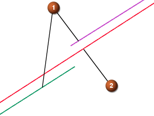

公差
有些曲面不能根据指定的参数精确地创建，因此，就需要使用公差选项。
公差可以在建模首选项对话框的常规选项卡中进行设置。
距离公差可以控制理论曲面和 NX 所创建的结果曲面之间的最大距离。使用近似创建特征建模方法都要根据这个公差进行。
角度公差是在对应点的曲面法向之间的最大允许角度，或在对应点的曲线切矢之间的最大允许角度。有些建模命令需要这个参数。
尽管有时距离公差已经满足要求，但却可能需要添加更多的段来满足角度公差要求。如果发现所创建的面数据太大或创建所需要的时间过长，就有可能要增大角度公差或者尽可能让角度公差大些，使其在允许范围之内。
优化曲线复选框允许在选定的曲线线串中的缝隙含有更大的公差。选中时，优化曲线公差因子乘以公差等于总容许公差。
如果选中了优化曲线，它用于直纹、通过曲线组、通过曲线网格、沿引导线扫掠、扫掠、截面曲线以及规律延伸曲面命令。

-
 为截面选择的原始曲线，其中含有缝隙
为截面选择的原始曲线，其中含有缝隙 -
 用于生成曲面的优化后的曲线
用于生成曲面的优化后的曲线